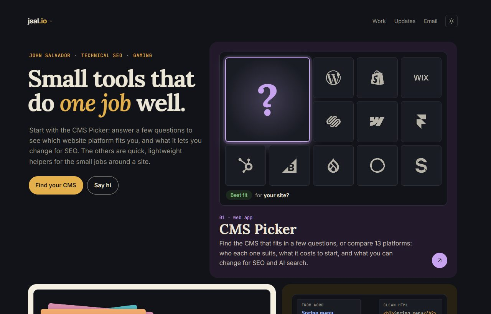
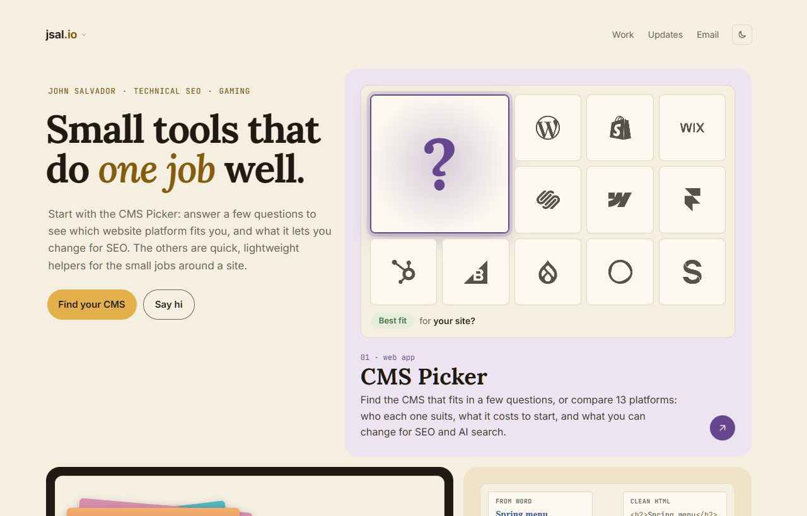
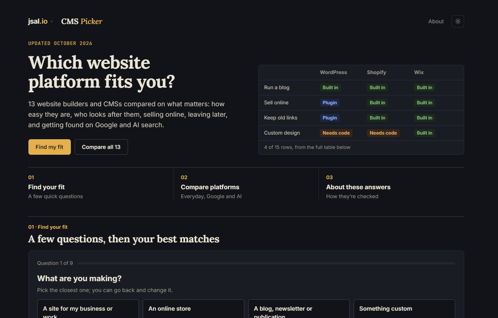
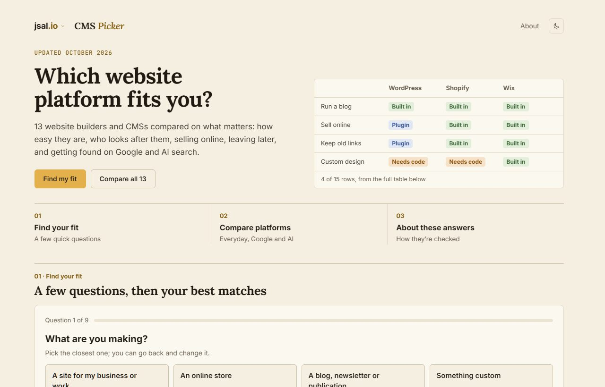
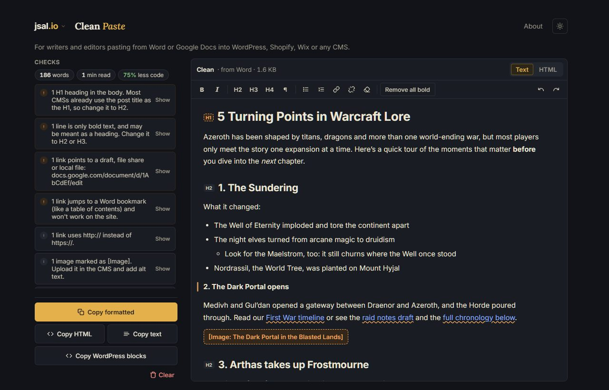
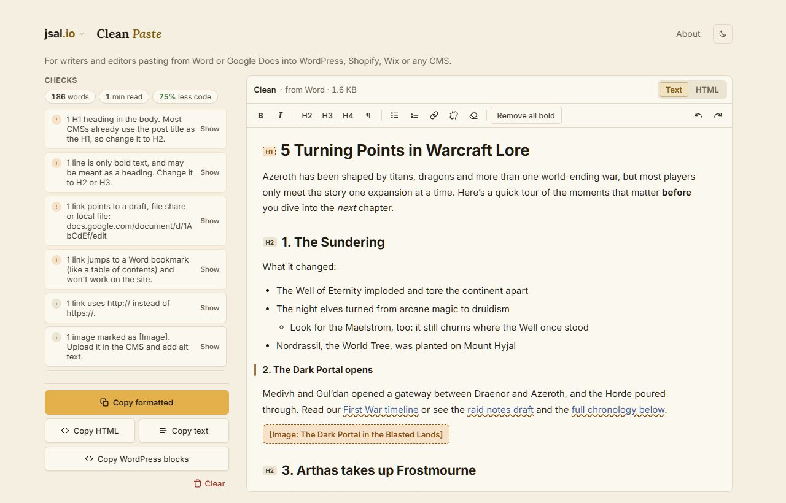
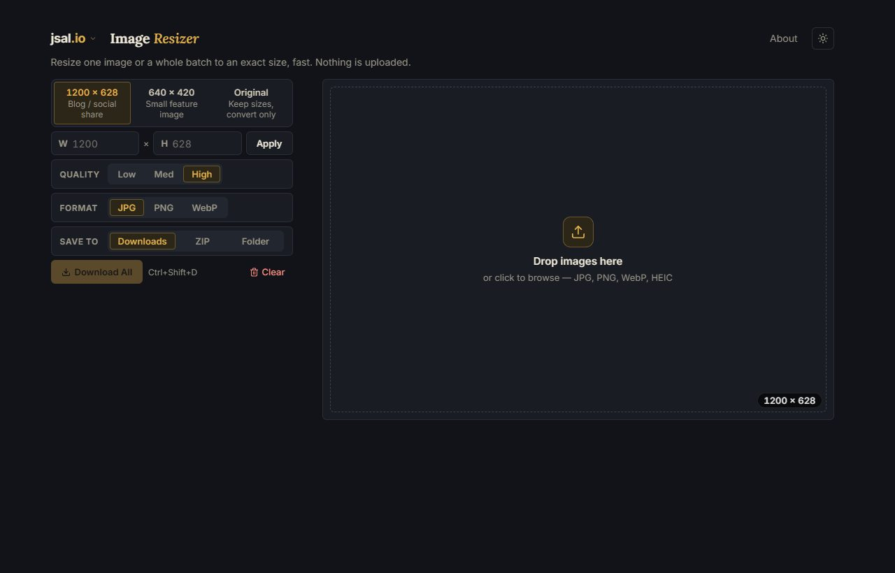
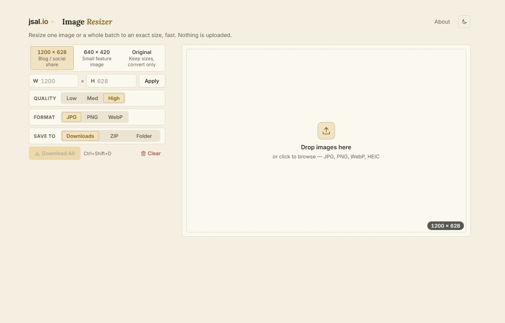
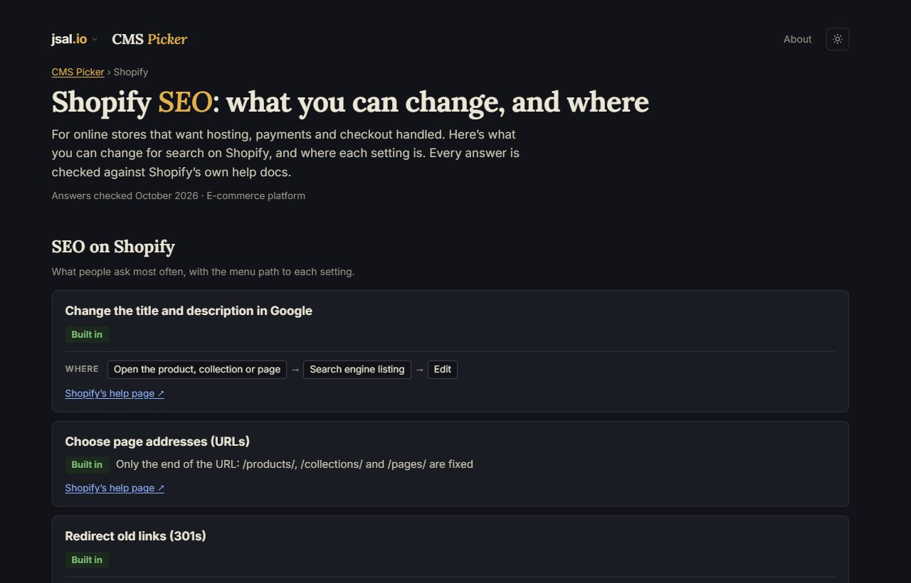
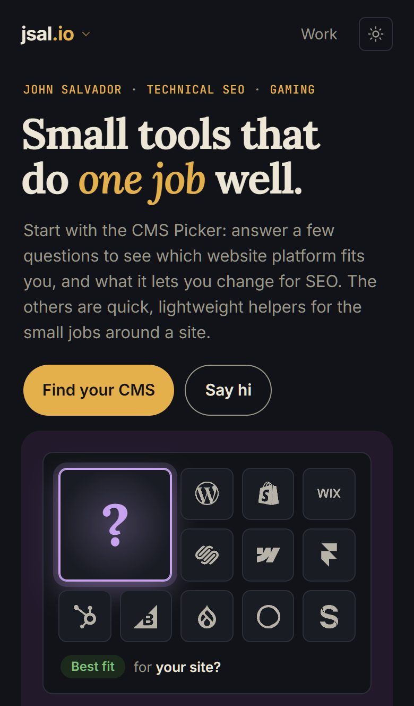

jsal.io · Visual identity & UI design system · October 2026
Small tools, one design language.
How jsal.io looks and behaves, taken from the site's own code rather than written for it: the colour tokens, the three typefaces, the column, the components the tools share, how things move, and what keeps it accessible. Every value on this page is the one the live site uses; the few suggestions are marked as such.
jsal.io is John Salvador's personal site: a web developer working in technical SEO, publishing the small browser tools he builds for the jobs around a website. Nothing is uploaded, nothing is sold, and the tools do one job each.
Identity
The name is always written jsal.io, with the .io in gold, or John Salvador in full. Never the four letters on their own as a name: a well-known YouTuber uses them. The wordmark is plain Inter at 700, 18px, tracked slightly tight (−0.02em); there is no logo mark beyond it.
Personality
Plain-spoken and exact: the copy says what a thing does and who it's for, in words a client would use ("Keep old links working when pages move", not "301 redirect management"). A little playful at the edges: a gamer's touches that never get in the way of the work, such as achievements for using the tools, a game-inventory "Backpack" for contact details, and a Warcraft lore sample post in Clean Paste.
Visual direction
The palette is named in the code as "the home page's Azeroth one": parchment and gold in light mode; dark slate, gold and arcane blue in dark. Serif headings (Lora) over a humanist sans (Inter), with a monospace (JetBrains Mono) for the small gold labels that sit above headings. The result reads as editorial rather than as a SaaS dashboard, which is deliberate: the tools are presented, not marketed.
Audience
Writers and editors pasting into a CMS (Clean Paste); anyone resizing images for a site (Image Resizer); people choosing a website platform and the agencies advising them (CMS Picker); and John's own team, through a sign-in-only Platform Playbook that follows the same rules.
02 · Design philosophy
Principles the code already keeps.
None of these were written as a manifesto first. Each is a rule the site enforces, in a stylesheet comment, a check that runs before every push, or a repeated decision across the pages. Where a check exists, it's named.
One job per toolEach tool does a single thing and its page says who it's for in one line under the title. The home page's headline is the thesis: "Small tools that do one job well."index.html · .jsal-for
Say each thing onceAbout sections follow a fixed order: a bold lead, "How to use it", any intro in one sentence, reference lists folded away, two or three questions the page doesn't already answer, then how to get in touch.CLAUDE.md · About sections
The tool fills the first screenExplanations sit below the fold, reached by an About link in the top bar. On phones the empty work area stretches to the bottom of the screen until there's content.design-rules.md · Layout
The top bar never movesEvery page carries the same top-bar markup, so the logo and theme button stay put during page transitions while the rest of the page changes around them.check.py compares the markup
Gold where it mattersOne accent, kept loud by spending it only on selected states, the main action, the one insight line, brand touches and the site's own links. Never on hover.check.py fails gold on hover
Words over widgetsPlain tags ("Built in", "Needs code") and plain states ("varies", "not verified") carry the meaning; colour reinforces, it never explains alone. Instructions swap "click" for "tap" on touch screens.nav.js · data-touch
Motion that steps asideShort, physical transitions (0.12 to 0.3s), every one with a reduced-motion fallback, and nothing moving on its own for more than five seconds.check.py · WCAG 2.2.2
Everything stays in the browserFiles, pasted documents and settings never leave the device; the only thing sent anywhere is basic analytics, and in Europe only with consent. The design makes the promise visible ("Nothing is uploaded") on every tool./privacy/
Checked, not assumedContrast, fonts, button corners, touch sizes and page markup are verified by scripts before each push; axe runs on every page in both themes. Design rules live in the repo next to the code they govern.build\check.ps1
03 · Colour system
Parchment and gold; slate, gold and arcane blue.
Every colour on the site comes from a --jsal-* token defined in shell.css, with a light value and a dark one. Written-out colours fail the pre-push check. The gold is two tokens on purpose: --jsal-accent for text and links (dark enough for 4.5:1 on every light surface) and --jsal-fill for the main button's fill and for text over images.
Lightdefault · prefers-color-scheme: light
Surfaces
Background--jsal-bg#f5efe2
Surface--jsal-surface#fbf8f0
Sunk--jsal-sunk#ece4d3
Line--jsal-line#e2d8c4
Line, firm--jsal-line-hi#cfc3a9
Text
Ink--jsal-ink#1f1a12
Ink 2--jsal-ink-2#3d362a
Muted--jsal-muted#6b6253
Gold
Accent--jsal-accent#835c0etext and links, 4.5:1
Fill--jsal-fill#e3b04bmain buttons, text on images
Colour reinforces a word; it never carries meaning alone. Gold is the accent and the rest are roles, so a reader learns the system once and it holds on every page, the team Playbook included.
Colour
Means
Where you see it
Gold
The site's accent: selected states, the main action, the one insight line, brand touches and the site's own text links. Never hover; focus is the ring, not a gold fill.
A pressed chip, "Find your CMS", "What tipped it", the gold word in each title, ".io", About links
Green
Fit, or success.
"Built in", a Copy button after it copied, "Best match"
Blue
Information, something in flight, and links inside a tool's content.
"Plugin/app", a note, "waiting for publish", links in Clean Paste's editor and in a quiz result's steps
Orange
A genuine warning.
"Needs code", a missing or stale source, "may look blurry", a bold-only line that may be a heading
Red
Not possible, and destructive actions.
"Not possible", Clear, Remove, Replace, an invalid size
Neutral
Everything else: labels, type badges, icons, cost bands, states such as "not verified".
"Unclear", "$25–$100/mo", "varies"
The answer ramp
On the CMS Picker a row says how well a platform does something. Its tags are one scale, read left to right, and the scale is the same wherever it appears, on the comparison table, the cards and the platform pages.
Built in→Plugin/app→Needs code→Not possible·Unclearvaries
Suggestion
The home page's bento tiles carry their own tint tokens (--cream, --blue, --green, --gold, --plum, each with ink, muted and accent values) that live only in index.html. They work, but they're the one set of colours outside shell.css. Moving them there, or documenting them here, would make the token set complete in one place. Nothing on screen would change.
04 · Typography
A serif that speaks, a sans that works, a mono that labels.
Three families, all self-hosted as Latin-subset variable fonts with font-display: swap, so nothing blocks the first paint. Lora carries every H1 and H2 on the public pages; Inter carries everything else, down to the smallest interface label; JetBrains Mono is reserved for the small gold uppercase labels above headings, code and keyboard keys. A pre-push check fails any visible H1 or H2 of 16px or more that isn't Lora.
Start with the CMS Picker: answer a few questions to see which website platform fits you, and what it lets you change for SEO.
Inter 400 · body · 15px / 1.6 · ink-2
It turns content copied from Word, Google Docs or a web page into clean, minimal HTML, keeping the real structure: headings, lists, links, tables, bold and italic.
Inter 400 · small labels · 12.5–14px · muted
For writers and editors pasting from Word or Google Docs into WordPress, Shopify, Wix or any CMS.
Inter 400bodyInter 500secondary buttons, mono labelsInter 600buttons, chips, H3sInter 700wordmark, tagsLora 700H1, H2Lora italic 600the gold word
The scale, as the pages set it
Role
Size
Face, weight
Where
Page title
clamp(40–44px, 5–7vw, 62–64px)
Lora 700, −0.03em
Home, Privacy, 404
Platform page title
clamp(28px, 4.4vw, 40px)
Lora 700, −0.02em
/cms-picker/<platform>/
Tile name
30px
Lora 700
Home tiles
Section heading
24–28px
Lora 700 (italic 600 for Currently, Achievements)
Every H2
Tool title in the top bar
20px
Lora 700, gold word italic
.jsal-title
Lede
17px
Inter 400
Under titles
H3
16–17px
Inter 600
How to use it, quiz questions
Body
15px / 1.6
Inter 400
Everywhere
Interface
13–14px
Inter 600 (controls) or 400
Buttons, chips, tags, top-bar links
Small labels
11–12.5px
Inter or JetBrains Mono
Hints, eyebrows, "varies"
Suggestion
The scale is consistent but set per page (the home title clamps from 44px, Privacy's from 40px). Naming four or five sizes as tokens (--jsal-size-title, -h2, -body…) would let a new page pick from the scale instead of re-deriving it. The values above are the scale; only the names are missing.
05 · Spacing & layout
One column, three widths, and a grid that stacks.
Every page shares a single content column so the top bar never shifts between pages. Each page's wrapper is max-width: calc(var(--jsal-col) + 40px) with a 20px gutter each side, and the column grows at two breakpoints.
The column
840px · default
1120px · from 1280px wide
1240px · from 1800px wide
Breakpoints the pages use
Width
What changes
≤ 520px
Less space above the top bar (14px); the Privacy page's text starts sooner
≤ 599px
Clean Paste's toolbar in two even rows; the CMS Picker's phone rules
≤ 720px
The CMS Picker's comparison becomes stacked cards, with groups that fold; the platform pages reflow
≤ 860px
The home page's bento grid stacks to one column
< 900px
Clean Paste in one column; the achievement pop-up moves to the bottom centre, or the top on touch screens
≥ 1280px
Column grows to 1120px
≥ 1800px
Column grows to 1240px
Spacing values in use
The pages work from a short list of pixel values rather than a named scale. Gaps between controls are 6, 8 or 10px; inside cards 14 to 26px; between sections 36 to 56px; the big ones (64px) are the About sections' bottom padding.
4
6
8
10
12
14
16
18
20
24
28
36
40
48
56
Corners
Four radii, as tokens: small controls and chips inside a control 4px; buttons and fields 6px; cards 8px; pills and round buttons 999px. The home tiles (22px) and the achievement pop-up (14px) are the two deliberate exceptions, both marked in their stylesheets.
--jsal-radius-sm · 4px
--jsal-radius · 6px
--jsal-radius-lg · 8px
--jsal-radius-pill · 999px
home tiles · 22px
The home page's bento
A 12-column grid with 16px gaps. Each row has one leading tile, and the wide side alternates, so the eye zigzags down the page; the Updates row is full width. Tab order follows the screen. On phones it stacks to one column.
Suggestion
The spacing values above fall almost entirely on a 2px/4px rhythm already. Naming the common ones (--jsal-gap: 8px, --jsal-pad: 14px, --jsal-section: 48px) would turn a habit into a rule without changing a pixel.
06 · Component library
The pieces every tool shares.
These are live, built from the same rules the apps use (each demo names its source). Hover is neutral everywhere: a firmer border or a slight tint. Gold means selected, focused, a file being dragged over, or the main action. Every control has one focus ring, and on touch screens every control is at least 44px tall.
Buttons · cms-picker/styles.css .btn, formatter .btn-primary/.btn-accent, image-resizer .btn-dangerHome page calls to action · index.html .cta (pill, lifts 2px on hover)
Chips and link-styled controls · cms-picker/styles.css .chip, .chip-linkSegmented control · image-resizer/styles.css .option-track, .quality-btn
Tags · cms-picker/styles.css .tag (the answer ramp), with the words that follow a tag
Built inAutomaticPlugin/appIndirectlyNeeds codeNot possibleUnclearUnder $25/movariesnot verified
Field, at rest and focused · the one focus ring, --jsal-focus-ring
Check rows · formatter/styles.css .check (a row about a line is a button: it shows the line)
Platform card · cms-picker/styles.css .card, with the card's one gold action
Squarespace
For small businesses and creatives who want a designed site without a developer.
The insight line and a caveat · cms-picker quiz result (.qz-vs, .qz-lim)
Ahead of WixWhat tipped it: you're making an online store, and Shopify is made for selling first.
ⓘWorth knowing: moving to another platform later is harder (products, customers and orders as CSV).
Achievement pop-up · shell.css .jsal-ach (bottom-right on desktop, top of the screen on phones)
Achievement unlockedFirst stepsUsed a tool
Top bar · shell.css .jsal-top (identical markup on every page; the theme button is 32px drawn, 44px to tap)
jsal.ioClean Paste
About
Keys · kbd, as in the About sections: Ctrl + V
07 · Motion & interaction
Quick, physical, and easy to switch off.
Motion is short and tied to a cause: a control answers a hover in 0.12s, a page changes in 0.3s, a tile lifts when the mouse arrives. Everything with movement has a prefers-reduced-motion fallback (checked before each push), and nothing moves on its own for more than five seconds.
Moment
Timing
What happens
Hover on a control
0.12–0.15s
Border firms to --jsal-hover-line or the surface tints to --jsal-sunk. Never gold.
Home tile hover
0.25s cubic-bezier(0.2, 0.8, 0.2, 1)
Lifts 4px and turns −0.4°; with a mouse it tilts toward the pointer up to 4° and a soft light follows. Not on touch, not with reduced motion.
Call-to-action hover
0.2s ease
Lifts 2px.
Page change
0.3s, old page out in 0.12s, new page in over 0.2s
Cross-document view transitions: the tile grows into the app it opens; logo and theme button stay put and sharp. Pages load ahead on hover in Chrome, Edge and Brave.
Achievement pop-up
0.3s in, 0.3s out, 4s on screen
Slides in at full opacity (so a contrast check never catches it half-faded), fades on the way out. Transform and opacity only.
Selected state
instant
Gold tint, gold text, a thin gold ring. A chosen option shouldn't lag the click.
Clean Paste "Show"
held, then fades
The line a check means gets a gold wash and a bar beside it, scrolls into view first, then fades.
CMS Picker tile
about 3s, once
Shuffles through six first places and rests on a question, so no platform looks like the site's pick; the full cycle plays only on hover or focus.
Focus
One ring for every control, text fields included: 0 0 0 2px var(--jsal-bg), 0 0 0 4px var(--jsal-accent). The gap of background colour keeps the ring legible on gold buttons and on tinted chips alike.
Feedback
Actions answer in words where it matters: a Copy button says "Copied" for two seconds in green; a saved edit says "Saved"; a cleared post offers "Undo clear". Small notes in muted text carry the longer hints.
08 · Accessibility
Built in, and checked before every push.
Accessibility here is a set of rules in the code and scripts that enforce them, not a review done once. The latest independent audit (axe-core 4.10 against WCAG 2.2 AA, both themes, 320 to 1440px) found no failures; John's own keyboard and NVDA testing covers what automated checks can't.
ContrastEvery text/background pair at least 4.5:1, graphics people need to see at 3:1. Light-mode gold text is #835c0e for that reason; the brighter #e3b04b is only a fill or text over images.tokens · axe
Touch targetsOn touch screens every control is at least 44px tall; the top bar's 32px theme button carries a 44px tap area. Desktop targets are at least 24px.pointer: coarse
No zoom surprisesText fields are 16px on touch screens, so iPhones don't zoom into them and leave the page zoomed.shell.css
KeyboardEvery control reachable, one visible focus ring, Esc closes menus and tooltips, Ctrl+Enter saves, Tab order follows the screen on the home page's bento.NVDA-tested 30 Oct 2026
Wording for the deviceInstructions that say click, drop or name a shortcut carry a touch version, swapped in on touch screens ("tap one to change it").data-touch
MotionEvery animation has a reduced-motion fallback; nothing moves on its own beyond five seconds (WCAG 2.2.2).check.py
Screen readersLive regions for check summaries and copy results; headings that read as sentences; hidden text where a tag alone would be ambiguous ("(not verified)").aria-live · .sr-only
ResponsiveReflows at 320px with no horizontal scroll; the comparison table becomes cards; tooltips stay inside the window.browser-check.mjs at 375 and 390px
Declined on purpose: a skip link. The pages have about five Tab stops before the content and the top bar must stay identical everywhere, so the cost outweighed the gain.
09 · Design in practice
The system on the pages, in both themes.
Screenshots of the live site at 1280px, October 2026, with a phone view of the home page. The same tokens, column and components throughout; only the content changes.

Home, dark. The thesis, the mono eyebrow, the gold word, and the first bento row.

Home, light. Parchment and the darker gold; the tiles keep their own tints.

CMS Picker, dark. A real slice of the table in the hero, so the page shows what it does.

CMS Picker, light. The answer ramp's tags read the same on parchment.

Clean Paste, dark. Checks as rows; the editor keeps Inter, with blue for links inside the content.

Clean Paste, light. The gold "Copy formatted" is the one main action.

Image Resizer, dark. Segmented controls with the gold selected state; the drop area waits for files.

Image Resizer, light.

A platform page, dark. Written by the publish from the same data as the table; the gold word here is "SEO".

Home on a phone. One column, the same type, 44px targets.